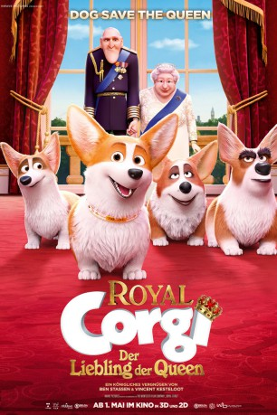
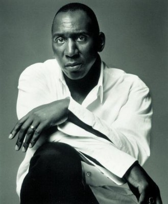

#11767 Royal Corgi - Der Liebling der Queen
Alternativ: The Queen's Corgi (Englischer Titel)
 
 IMDB-Wertung: 4.7 / 10
IMDB-Wertung: 4.7 / 10  Metascore: 0
Metascore: 0 
Seit Rex ein kleiner Corgi-Welpe war, lebt er bei der britischen Königin im Buckingham Palast. Genau so lange führt er ein Leben im Luxus. Scheinbar mit links erobert der Kleine das Herz der Majestät, sodass die dienstälteren Corgis im Palast bald nichts mehr zu melden haben. Mit seinen Allüren treibt Rex schon bald Prinz Philip, dem Ehemann von Königin Elisabeth II., in den Wahnsinn. Doch damit nicht genug: Als er während eines Staatsbanketts zu Ehren des US-Präsidenten in Ungnade fällt, ist es mit dem Leben in Saus und Braus schneller vorbei, als man „Gott schütze die Königin“, sagen kann. Kurzerhand landet Corgi Rex auf den Straßen Londons und muss sich wie jeder andere Streuner auch durchschlagen und ums Überleben kämpfen....
Jahr: 2019
Dauer: 83 Minuten
FSK: 0
Land: Belgien Studio: Wild BunchTonspuren: DTS - ,
Untertitel:
Auflösung: 1080p (1920x1080) Größe: 5437 MB
Genre: Komödie, Animation/Trick, Familie
Regisseur: Vincent Kesteloot, Ben Stassen
Drehbuch: Rob Sprackling, Johnny Smith
Soundtrack: Ramin Djawadi
Darsteller:
- Jo Wyatt als Wanda
 Mari Devon als Queen
Mari Devon als Queen Dino Andrade als Charlie / Pollux
Dino Andrade als Charlie / Pollux Joey Camen als Chihuahua / Sanjay / Al Sation / Tyson
Joey Camen als Chihuahua / Sanjay / Al Sation / Tyson Kirk Thornton als Trump
Kirk Thornton als Trump- Jamal Fahim als Dodgey Dog
- Daniel Wolfe als Guard 2
- Lani Minella als Ginger
- Paul Gregory als Duke
- Anthony Skordi als Nelson
 Tom Courtenay als The Duke Of Edinburgh
Tom Courtenay als The Duke Of Edinburgh- Jon Culshaw als Trump
- Kulvinder Ghir als Sanjay
 Sarah Hadland als Mitzy
Sarah Hadland als Mitzy Matt Lucas als Charlie
Matt Lucas als Charlie-  Colin McFarlane als Chief
 Iain McKee als Jack
Iain McKee als Jack- Nicole Moorea Sherman als Little Girl
 Sheridan Smith als Wanda
Sheridan Smith als Wanda Nina Wadia als Patmore
Nina Wadia als Patmore Julie Walters als The Queen
Julie Walters als The Queen- Jack Whitehall als Rex
 Ray Winstone als Tyson
Ray Winstone als Tyson- Rusty Shackleford als Jack
- Leo Barakat als Rex
- Nicole Sherman als Little Girl
- Madison Brown als Mitzi
- Camila Rhodes als Vet
- Danny Katiana als Chief
- Dave B. Mitchell als Butch
- Elizabeth Dean als Cecil
- David A. Alano als Guard 1
- Lin Gallagher als Patmore / Lady Margret
- Millie Mup als Melania / Asian Mom
- Rose Thurloe als Foreign Secretary
- Jamie Scott als Castor / Bernard
- Timothy Christian Jansen als Benjamin
- Debra Stephenson als Melania
Datei: X:\Kinder Filme (N-Z)\Royal Corgi - Der Liebling der Queen (2019, FSK0, 1920x1080).mkv seit 20.09.2019
Festplatte: Kinder-Filme+Trick
 Es gibt insgesamt 87 Filme in der Gruppe 'Kinder Filme (N-Z)'
Es gibt insgesamt 87 Filme in der Gruppe 'Kinder Filme (N-Z)'